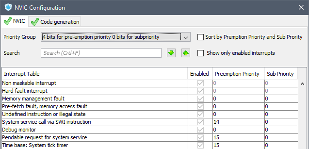
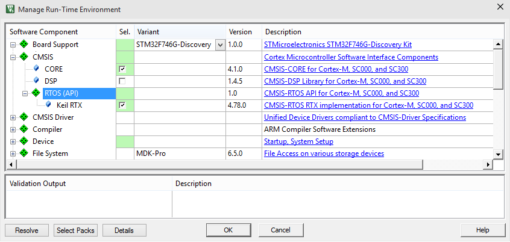

This section explains how to add the CMSIS-RTOS RTX real-time operating system.
Setup in STM32CubeMX
In STM32CubeMX ensure that the System Tick Interrupt is set to the lowest priority (which is the highest number).
Configuration tab
- Under System open NVIC Configuration. Set the following:
- Group priority using at least 1-bit for pre-emption
- SysTick and PendSV: lowest pre-emption priority (highest possible value)
- SVC: one pre-emption priority higher than SysTick/PendSVC
- Click OK to close the NVIC Configuration dialog.

Setup in MDK
In MDK, the steps to add the CMSIS-RTOS RTX real-time operating system to a project that is configured with STM32CubeMX are:
Step 1: Add CMSIS-RTOS RTX
- Open the Manage Run-Time Environment window and add CMSIS:RTOS (API):Keil RTX.

Step 2: Configure CMSIS-RTOS RTX parameters
- Open the configuration file RTX_Conf_CM.c from the project window, component group CMSIS.
- Optionally you may change to the Configuration Wizard tab.
- Change the following settings:
- Main Thread stack size [bytes] 1024
- RTOS Kernel Timer input clock frequency [Hz] set to core clock frequency
- Save the file.
Step 3: Add code for CMSIS-RTOS RTX in 'main.c'
- Open the source file main.c from the project window, source group STM32CubeMX:Common Sources and add code lines in the sections USER CODE BEGIN / USER CODE END as shown below:
:
#include "cmsis_os.h"
:
extern uint32_t os_time;
uint32_t HAL_GetTick(void) {
return os_time;
}
:
int main(void)
{
:
osKernelInitialize ();
:
osKernelStart ();
:
Step 5: Build Project in MDK
- Use Project - Build Target to generate the application code.